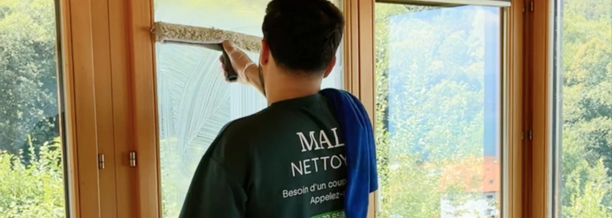

- 64/64 états des lieux validés — garantie retour gratuit écrite sur chaque fin de bail
- Réponse sous 24h — y compris le weekend, même pour les urgences
- Service insalubre : l'un des rares disponibles en Suisse romande, avec discrétion totale
- Deux entreprises, une seule famille : coordination directe avec Malo Débarras
- RC Pro AXA — vous êtes couverts, pas nous
1. Un chiffre qui ne ment pas : 64 sur 64
Nous avons validé 64 états des lieux sur 64. Pas 62 sur 64. Pas « la quasi-totalité ». 64 sur 64.
Ce chiffre n'est pas une formule marketing. C'est le résultat de notre garantie retour gratuit écrite dans chaque devis : si la régie signale un point lié à notre intervention, nous revenons sans frais supplémentaires. Cette clause nous engage juridiquement — ce n'est pas une promesse verbale.
Concrètement, ça signifie que votre caution est protégée. Pas parce qu'on vous le dit, mais parce qu'on le prouve à chaque intervention.
« J'avais frotté pendant des semaines sans rien obtenir, j'étais inquiet de ne pas réussir avant l'état des lieux. En une matinée, vous avez retrouvé l'état d'origine, merci !! »
2. Nous répondons vraiment le weekend
Ce n'est pas une promesse sur un site web. C'est une réalité que nous vivons chaque semaine.
Trois des situations de nettoyage intensif que nous avons traitées dans la Broye ont commencé par un appel le samedi matin. Dans les trois cas, nous étions la seule entreprise à avoir décroché. Dans les trois cas, nous avons obtenu le mandat — non pas parce que nous étions les moins chers, mais parce que nous étions là quand les autres ne l'étaient pas.
Les situations difficiles n'attendent pas le lundi. Une hospitalisation un vendredi soir, une remise de clés le lundi matin, une découverte le weekend — ce sont ces moments où la réactivité compte vraiment.
Nous n'intervenons pas 7j/7 toute l'année. Mais nous faisons le maximum pour répondre quand ça compte.

3. Le service insalubre : rare, discret, humain
Peu d'entreprises en Suisse romande proposent réellement le nettoyage insalubre ou intensif avec les garanties nécessaires.
Ce que nous offrons dans ces situations :
- Réponse sous 24h — même le weekend
- Intervention sous 48h pour les urgences
- Véhicules sans marquage si vous le souhaitez
- Aucune information partagée sur votre situation
- Tri final à votre charge — rien n'est jeté sans votre accord
Derrière chaque logement insalubre, il y a une histoire humaine : un parent âgé en déni, une hospitalisation imprévue, une dépression silencieuse. Notre équipe est formée à ces contextes. Personne ne commente, personne ne juge.
4. Deux entreprises, une seule famille
Malo Nettoyage et Malo Débarras sont deux entreprises distinctes. Deux frères, deux spécialités, une coordination directe.
Ce que ça change concrètement pour vous :
- Un seul contact pour débarras + nettoyage
- Un seul planning sans négociation entre prestataires
- Une seule facture globale
- Aucune zone grise sur qui fait quoi
Pour une vente immobilière avec remise des clés dans 5 jours, une succession à gérer à distance, ou un logement à vider et nettoyer après un décès — cette coordination fraternelle fait une différence que personne d'autre dans la région ne peut offrir.
5. Nous assumons le risque à votre place
La plupart des entreprises de nettoyage font de leur mieux. Ce qui nous distingue : nous mettons cet engagement par écrit et nous en assumons les conséquences.
| Engagement | Comment on le prouve |
|---|---|
| Garantie retour gratuit | Écrite dans chaque devis fin de bail |
| RC Pro AXA | Nom de l'assureur disponible sur demande |
| Prix fixe | Le devis signé = la facture finale |
| 90 % de produits biodégradables | Notre engagement écologique documenté |
| 64/64 états des lieux validés | Chiffre vérifiable, pas une formule |
Aucun de ces engagements n'est verbal. Tous sont écrits, vérifiables ou prouvables.
6. Nous connaissons la Broye — vraiment
Basés à Payerne depuis le début, nous connaissons les régies de la Broye vaudoise et fribourgeoise, leurs exigences, leurs habitudes. Nous savons quels points sont systématiquement vérifiés lors d'un état des lieux à Avenches, ce que les régies d'Estavayer regardent en premier, comment les propriétaires de Domdidier fonctionnent.
Cette connaissance ne s'achète pas avec un siège à Lausanne ou à Fribourg-ville. Elle s'acquiert en travaillant dans la région, chaque semaine, depuis le début.
Nos villes et communes couvertes : Payerne, Avenches, Moudon, Estavayer-le-Lac, Domdidier, Cudrefin, Grandcour, Faoug et toute la Broye vaudoise et fribourgeoise — sans frais de déplacement supplémentaires.
7. Ce que nos clients disent (et ne disent pas)
Nos clients ne nous recommandent pas parce que nous sommes les moins chers. Ils nous recommandent parce que nous avons résolu leur problème quand personne d'autre ne répondait.
« Nous avons eu recours à Malo Nettoyage pour le nettoyage complet de notre appartement à vendre. Super professionnels, nettoyage de très grande qualité, rapides, disponibles et fiables. Je recommande les yeux fermés ! »
« Malo Nettoyage s'occupe du ménage chez mes grands-parents, et c'est un vrai soulagement pour nous. Leur équipe est incroyable : respectueuse, discrète, toujours souriante. Mes grands-parents se sentent écoutés et respectés. Nous vous recommandons les yeux fermés ! »
Ces retours ont un point commun : ce n'est pas le prix qui revient, mais la confiance, le professionnalisme et le respect. Le vrai critère de choix se construit avec des chiffres, des garanties écrites et une présence réelle quand ça compte.
FAQ – Pourquoi choisir Malo Nettoyage
Malo Nettoyage est-il vraiment disponible le weekend ?
Oui, dans la mesure du possible. Nous ne promettons pas une disponibilité 7j/7 toute l'année, mais nous répondons régulièrement le weekend — particulièrement pour les urgences (nettoyage insalubre, remise de clés imminente). C'est une réalité de terrain, pas un argument commercial.
La garantie 64/64 s'applique-t-elle à tous les types de nettoyage ?
Non, uniquement aux fins de bail. C'est là que la régie vérifie et que votre caution est en jeu. Pour les autres prestations (vitres, chantier, bureaux), nous garantissons la qualité de notre intervention mais le contexte de l'état des lieux est spécifique à la fin de bail.
Malo Débarras et Malo Nettoyage, c'est vraiment deux entreprises distinctes ?
Oui. Deux structures juridiques séparées, deux frères dirigeants. Ce qui les unit : la coordination directe, la confiance mutuelle entre les équipes et une offre combinée qui vous évite de multiplier les interlocuteurs.
Intervenez-vous hors de la Broye ?
Oui, selon la nature et le volume de la prestation. Notre zone principale est la Broye vaudoise et fribourgeoise (sans frais de déplacement). Pour Yverdon-les-Bains, Fribourg-ville, Lausanne ou Neuchâtel, nous intervenons selon les situations — contactez-nous pour vérifier.
Comment obtenir un devis rapidement ?
Via notre formulaire en ligne, par téléphone ou par message. Nous répondons sous 24h avec un devis personnalisé basé sur vos photos ou une visite. Prix fixe, sans surprise à la facture.
En résumé
Malo Nettoyage se différencie dans la Broye par des preuves concrètes : 64/64 états des lieux validés avec garantie écrite, réponse réelle le weekend, service insalubre rare et discret, coordination fraternelle avec Malo Débarras et une connaissance terrain de la région que seule une équipe locale peut offrir. Pas de discours générique — des chiffres, des garanties et une présence quand ça compte vraiment.
Vous voulez travailler avec une entreprise qui assume ses engagements par écrit ? Demandez-nous un devis gratuit — réponse sous 24h, prix fixe, garantie retour incluse.